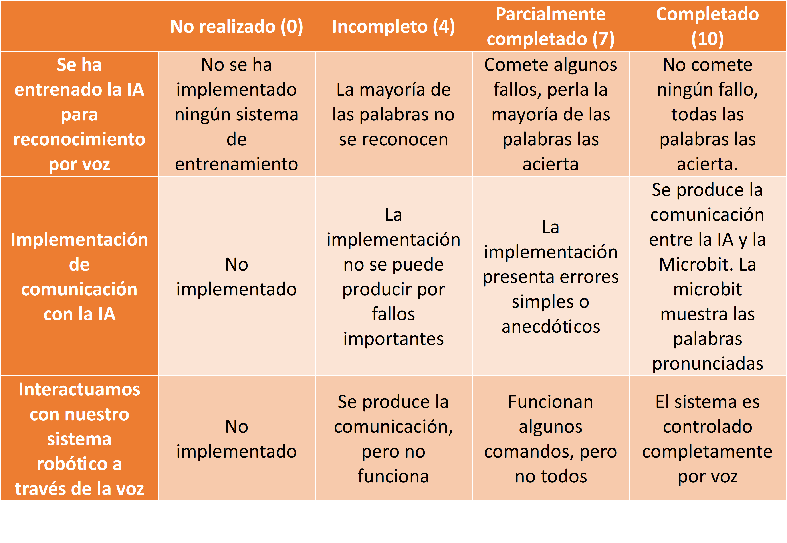
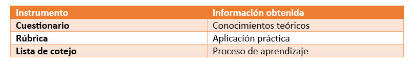

Instrumentos de evaluación
Para evaluar el grado de adquisición de los aprendizajes previstos se utilizarán tres instrumentos de evaluación complementarios:
- Cuestionario digital en Moodle.
- Rúbrica para el producto final.
- Lista de cotejo de observación sistemática.
Cuestionario
Los cuestionarios se utilizan como instrumento para evaluar la compresión de los conceptos sobre los que se basan los principios de la Inteligencia Artificial. Los cuestionarios son elaborados en Moodle y se componen de preguntas se componen de preguntas de diversos tipos (opción múltiple, emparejamiento, arrastrar y soltar, etc) que hacen una revisión bastante extensa de los contenidos dados para este punto.
Los resultados del cuestionario determinarán el nivel de compresión de los conceptos e identificar los puntos débiles y fortalezas. El resultado de la media de las respuestas alimentara el criterio de evaluación “4.2. Comprender los principios básicos de funcionamiento de los agentes inteligentes y de las técnicas de aprendizaje automático, con objeto de aplicarlos para la resolución de situaciones mediante la Inteligencia Artificial” que con la media de resultados del resto de instrumentos darán la valoración completa de este criterio. Así, a través de este cuestionario, se evaluará:
- Comprensión del concepto de Inteligencia Artificial.
- Funcionamiento básico de los agentes inteligentes.
- Concepto de aprendizaje automático.
- Reconocimiento de voz.
- Relación entre datos, entrenamiento y resultados.
- Identificación de limitaciones y errores de los sistemas inteligentes.
Estos resultados quedarán recogidos automáticamente en Moodle.
Rúbrica
La rúbrica es utilizada para evaluar los resultados prácticos realizados. El resultado de la rúbrica alimentara el criterio de evaluación “4.2. Comprender los principios básicos de funcionamiento de los agentes inteligentes y de las técnicas de aprendizaje automático, con objeto de aplicarlos para la resolución de situaciones mediante la Inteligencia Artificial” que con la media de resultados del resto de instrumentos darán la valoración completa de este criterio.
La rúbrica utilizada será la siguiente:

Instrumento de evaluación “lista de cotejo”
Durante el desarrollo de las sesiones prácticas se utilizará una lista de cotejo para registrar observaciones relacionadas con el proceso de aprendizaje y que permitirá evaluar si el alumnado participa activamente en las tareas, colabora con sus compañeros, resuelve problemas de manera autónoma, sigue las instrucciones de trabajo, realiza pruebas para mejorar el sistema y si documenta adecuadamente el proceso.
Con este instrumento se evaluarán aspectos que no aparecen reflejados ni en el cuestionario ni en el producto final, especialmente aquellos relacionados con el proceso de aprendizaje.
La evaluación se realizará mediante la combinación de los tres instrumentos:

La comparación de los resultados obtenidos permitirá validar la información mediante triangulación. Por ejemplo:
- Un alumno puede obtener una buena calificación teórica y presentar dificultades en la práctica.
- Otro alumno puede mostrar dificultades conceptuales iniciales, pero demostrar una excelente capacidad de resolución de problemas durante la actividad práctica.